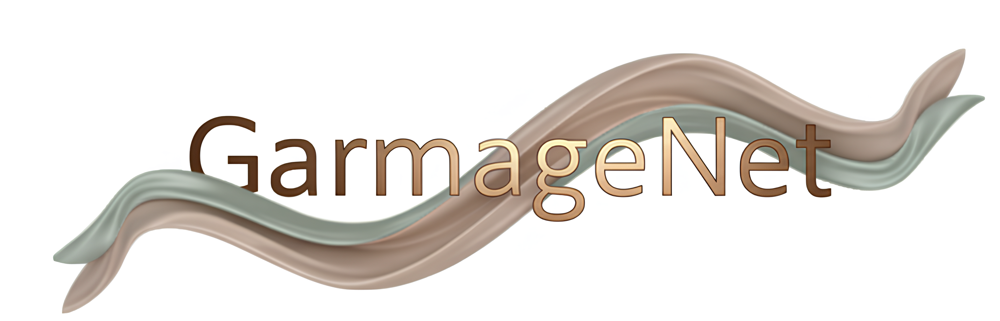

A Multimodal Generative Framework for Sewing Pattern Design and Generic Garment Modeling
A Multimodal Generative Framework for Sewing Pattern Design and Generic Garment Modeling
1 Zhejiang Sci-Tech University,
2 Style3D Research,
3 Shanghai Jiao Tong University,
4 State Key Lab of CAD&CG, Zhejiang University
* Equal contribution † Corresponding author

Realistic digital garment modeling remains a labor-intensive task due to the intricate process of translating 2D sewing patterns into high-fidelity, simulation-ready 3D garments.
We introduce GarmageNet, a unified generative framework that automates the creation of 2D sewing patterns, the construction of sewing relationships, and the synthesis of 3D garment initializations compatible with physics-based simulation.
Central to our approach is Garmage, a novel garment representation that encodes each panel as a structured geometry image, effectively bridging the semantic and geometric gap between 2D structural patterns and 3D garment shapes.
GarmageNet employs a latent diffusion transformer to synthesize panel-wise geometry images and integrates GarmageJigsaw, a neural module for predicting point-to-point sewing connections along panel contours.
To support training and evaluation, we build GarmageSet, a large-scale dataset comprising over 10,000 professionally designed garments with detailed structural and style annotations.
Our method demonstrates versatility and efficacy across multiple application scenarios, including scalable garment generation from multi-modal design concepts (text prompts, sketches, photographs),
automatic modeling from raw flat sewing patterns, pattern recovery from unstructured point clouds, and progressive garment editing using conventional instructions-laying the foundation for fully automated, production-ready pipelines in digital fashion.
Methodology

Framework Overview:
Our framework seamlessly converts multi-modal design inputs (a), including text descriptions, sewing patterns, line-art sketches, and point clouds into simulation-ready garment assets (d).
Central to our framework is the novel Garmage representation (b), a unified 2D–3D structure encoding each garment as a structured set of per-panel geometry images.
Leveraging Garmage, our approach efficiently recovers vertex-level sewing relationships and detailed 3D draping initializations (c), enabling direct and high-quality garment simulation.

Diffusive Garmage Generation.
During the geometry encoding stage (top), each garment is encoded into a set of fixed-size (72-dimensional) latent vectors using a Variational Autoencoder (VAE).
These compact latent representations serve as training targets for the subsequent diffusion generation stage (bottom).
In the diffusion generation stage, we employ a diffusion transformer (DiT) denoiser,
integrating multi-modal conditions, including line-art sketches, raw sewing patterns, and point clouds via cross-attention mechanisms to effectively guide and control the garment generation process.
Simulation-ready Sewing-Pattern Recovery. We sample boundary points (c) from the generated Garmage, classify them as sewing or non-sewing (d), and predict point-to-point stitches (e) as an adjacency matrix. Vectorized sewing patterns (b) are extracted from the Garmage silhouette, stitched accordingly (f), and reconstructed into triangle meshes via Delaunay triangulation. Vertex-wise draping from Garmage is then applied, yielding a simulation-ready mesh for integration into any cloth simulation engine to produce the final garment (g).

GarmageSet
GarmageSet
is a professionally curated, industrial-grade dataset comprises 14,801 unique garments spanning five
major clothing categories like tops, pants, skirts, dresses, outerwears
and several minor categories like bras, vests, pajamas.
Multi-modal Generation
GarmageNet
can generate 3D assets from various input modalities, including text, line-art sketches and in-the-wild images.
---> caption generation
---> image & sketch generation
Automatic Garment Modeling
In industry practice, garments typically exist as raw 2D sewing patterns (.DXF) without corresponding draped 3D assets.
Converting these patterns into draped meshes is a complex, simulation-guided process that often requires multiple iterations and can take hours or even days for professionals.
Leveraging a masked training scheme during latent encoding, GarmageNet generates complete garment assets from raw sewing patterns,
by providing fine-grained 3D initialization through the Garmage representation and establishing vertex-level stitching relationships using GarmageJigsaw.
Sewing Pattern Recovery
With the rise of 3D scanning and multi-view reconstruction, capturing realistic garment shapes as unstructured point clouds has become easier than ever.
But these raw 3D forms lack the structured sewing patterns needed for actual production.
GarmageNet bridges this gap by transforming point-cloud data of draped garments into Garmages with structured sewing patterns, enabling direct integration into manufacturing workflows.
Progressive Generation And Editing
GarmageNet
supports advanced garment editing functionalities, such as adding, deleting, or replacing components of an existing garment.
Citation
@article{li2025garmagenet, title={GarmageNet: A Multimodal Generative Framework for Sewing Pattern Design and Generic Garment Modeling}, author={Li, Siran and Liu, Chen and Liu, Ruiyang and Wang, Zhendong and He, Gaofeng and Li, Yong-Lu and Jin, Xiaogang and Wang, Huamin}, journal={arXiv preprint arXiv:2504.01483}, year={2025} }